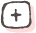
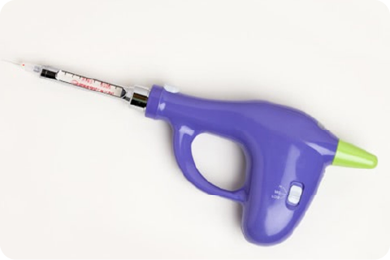
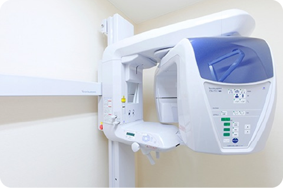
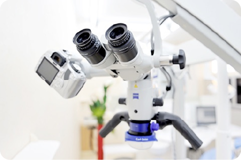
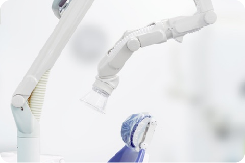
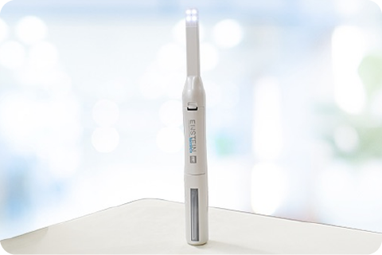
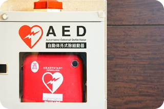
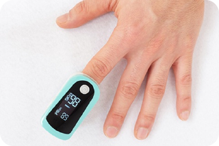
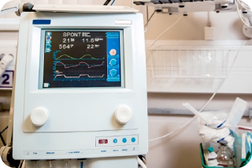

ビスカこども歯科クリニック
ビスカこども歯科クリニック

院内・設備
Facilities

院内紹介
外来環(歯科外来診療環境体制)
外来環(歯科外来診療環境体制)は、厚生労働省が定めた医療機関の基準のことです。
「院内感染を防ぐために、器具の滅菌などの衛生管理を徹底している」「緊急時に応急処置ができる装置を備えている」などの厳しい基準がありますが、当院はそのすべてをクリアしております。
か強診
テキストテキストテキストテキストテキストテキストテキストテキストテキストテキストテキストテキストテキストテキストテキストテキストテキストテキストテキストテキストテキストテキストテキストテキストテキストテキストテキストテキストテキストテキストテキストテキストテキストテキストテキストテキストテキストテキストテキストテキストテキストテキストテキストテキストテキストテキストテキストテキストテキストテキストテキストテキストテキストテキストテキストテキスト
設備紹介





緊急対応設備
AED

AEDは、不整脈による心停止の際に、心臓に電気ショックを与えて正常なリズムに戻すための医療機器です。
パルスオキシメーター

指にはめるだけで、動脈の血中酸素飽和度と脈拍数が測定できる医療機器です。
生体モニター

全身状態を把握しながら、急な体調の変化にいち早く対応できるよう備えています。

 電話をかける
電話をかける WEB予約
WEB予約